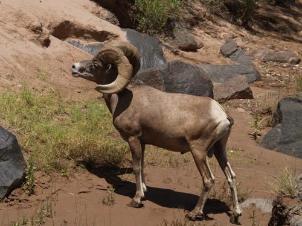

Best Rafting site

Get ready for an unforgettable journey on the river! Whether you're seeking thrilling rapids, scenic landscapes, or a relaxing float. We offer the ultimate river experience for adventurers of all kinds.
Get ready for an unforgettable journey on the river! Whether you're seeking thrilling rapids, scenic landscapes, or a relaxing float. We offer the ultimate river experience for adventurers of all kinds.
Keep an eye on the cliffs above—you might catch a glimpse of a majestic mountain goat balancing effortlessly on the rocky edges. With long, curved horns and sure-footed grace, these wild climbers are true icons of the rugged landscape, adding a dash of natural wonder to your river journey.
As you drift along the riverbank, you may spot a curious family of otters playfully diving in and out of the water. Known for their playful antics and sleek movements, these lively creatures bring a touch of joy and energy to the calm stretches of your rafting adventure.